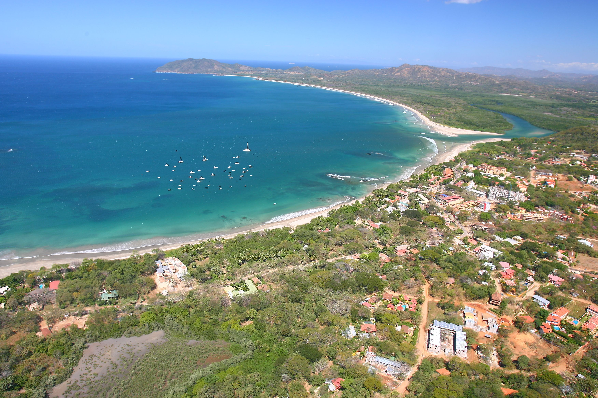
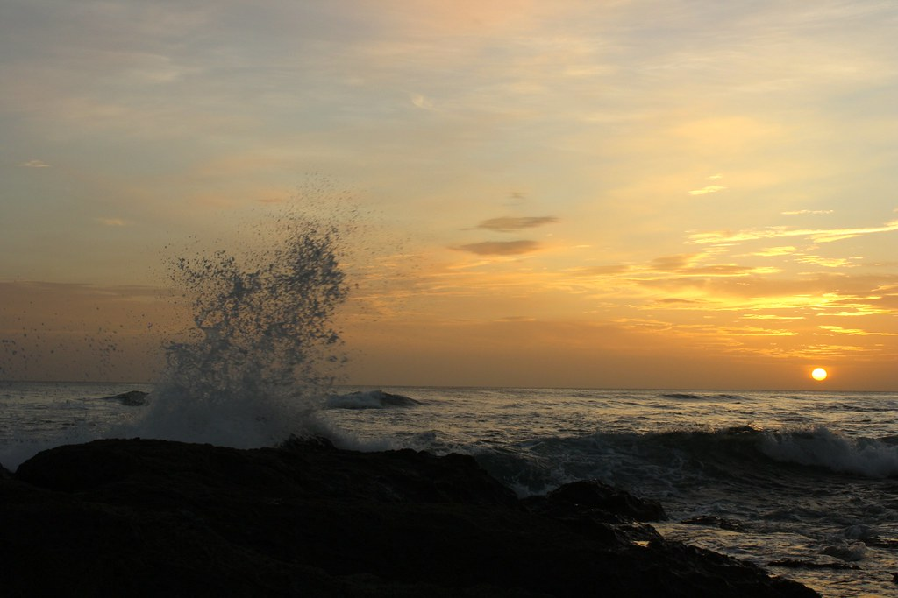

Tamarindo esta ubicado en la hermosa provincia de Guanacaste, en ella se encuentra Playa Tamarindo muy popular por su fuerte oleaje perfecta para surfear, puede ver los atardeceres espectaculares fente a la playa. Ademas encontrarás multitud de opciones fantásticas para ir de compras o comer, perfectas para probar los auténticos sabores de Costa Rica. Si tú quieres estar unos dias ahi también, encontrarás preciosas casas de playa, hostales y hoteles de lujo junto a las soleadas playas.

Imagen con fines ilustrativos Playa Langosta
Playa Langosta, famosa por sus espectaculares olas. Dividido a izquierda y derecha, es el lugar perfecto para surfistas avanzados. Espectaculares parques nacionales están a la vuelta de la esquina. ¡Perfecto para caminar y explorar volcanes, la oportunidad de ver tortugas llegar a la costa para desovar, también están disponibles paseos a caballo, recorridos en vehículos todo terreno, kayak en los manglares locales o tirolesa local y muchas otras aventuras.

Mas visitado Catarata La Paz
Es el recorrido natural más popular en el área de San José con cinco cascadas famosas y el santuario de animales más grande de Costa Rica. Es, con mucho, el mejor lugar para ver la vida silvestre en Costa Rica. Es el destino perfecto para pasar su primera o última noche en el país dada su proximidad al aeropuerto de San José y, al mismo tiempo, su entorno único de selva tropical de montaña. La propiedad está ubicada entre el Parque Nacional Volcán Poás y el Parque Nacional Braulio Carrillo en la ruta ecológica entre San José y Arenal.